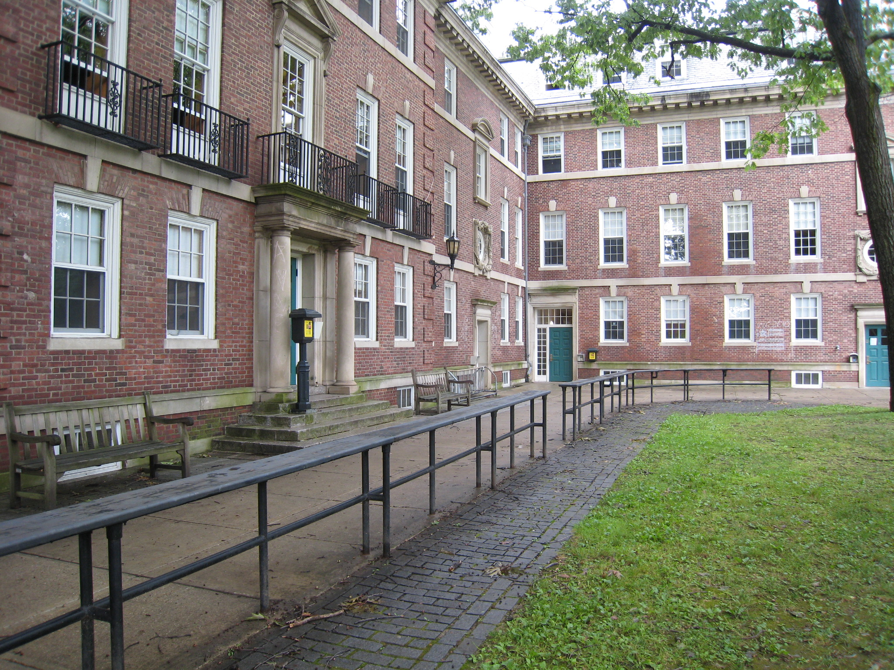

About Us
Back
Contents
About College

University College of Engineering, Pulivendula, J.N.T. University Anantapur has been established with social objective of providing technical education
accessible and affordable to the rural people. The college foundation was laid on 25th December 2005 by the hands of our beloved former Chief
Minister of Andhra Pradesh, late Dr.Y.S.Rajashekhara Reddy garu. The institute is one of the University Colleges of JNTU Anantapur, Ananthapuramu
(State University) and is a government run institute With its dedicated faculty, staff and sincere efforts of students put together the institute has earned
good reputation in the J.N.T.University Anantapur region.
Vision & Mission
Attaining global recognition by providing high quailty education following creative and innovative trends in all the fields thereby emerging as the centre
of excellence with strong theoretical and practical foundation and contributing significantly to the soceity by providing need based service enriched
with social and morat values.
Quality Policy
- Encourage faculty member to acquire higher qualification
- Provide best teaching practices (Utilizing LCD, NPTEL video lecturers).
- Quality online QEEE lecturers are provided.
- Recruit well qualified faculty members at various levels.
- Continuous additions to infrastructure facilities.
- Improving Library and Computing facilities.
- Conducting students’ counseling.
- Student Feedback on Faculty.
- Alumni Feedback on Institution.
- Results analysis of University examination.
- Maintaining departmental library.
- Faculty Performance Appraised by HOD.
- Maintain Staff – Student Ratio 1:15
- Organize Educational Tours / Industrial Visits / Guest Lectures.
Achievements of the college
- Approved by A.I.C.T.E.
- Recognized by U.G.C under the sections 12(B) and 2(f) of the U.G.C act and eligible to receive central assistance
- One of the only 8 Govt. Colleges in the State got World Bank aided Technical Education Quality Improvement Project – II (TEQIP-II)
- Youngest College among the Colleges under TEQIP – II project.
- Selected by the Govt. of India as one of the QEEE (Quality Enhanced Engineering Education) centre in the country.
- IIT, Chennai has accorded partner status (Highest) to this institution for QEEE (Quality Enhanced Engineering Education) programme 2016.
- Accredited by National Board of Accreditation for all eligible under graduate programmes.
- “AAA” Grading by Career 360 Magazine.
- Awarded as “Excellent Technical Education Institution in A.P” by CMAI Association
- Nodal training Centre for NBA
- All-round champions in the University Games
Contact Us
For academic & Admissions
Vice Principal
Phone No: 7670902301, 9701342401
Email: viceprincipal.cep@jntua.ac.in
Prof. In charge of Exams
Phone No: 7670902314
For Hostels
Officer in charge of Hostels
Phone No: 7670902312, 8500070977
For Examinations
Dy, Controller-1
Phone No: 7670902315
Email: oas1.cep@jntu.ac.in
Dy, Controller-2
Phone No: 7670902316
Email: oas2.cep@jntu.ac.in